図解：表現主義
表現主義の成立と展開
- 1890年代
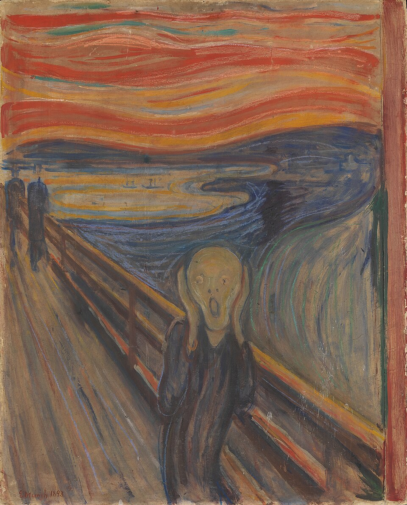
ムンクの先駆描き方に感情
うねる線と色 - 1898
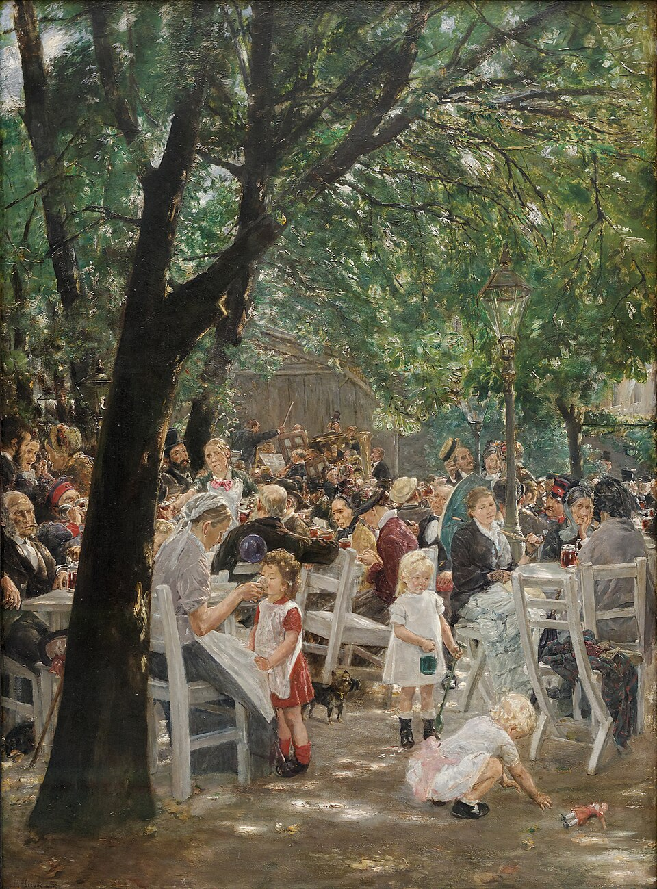
ベルリン分離派ムンク事件に反発
リーバーマンら - 1905
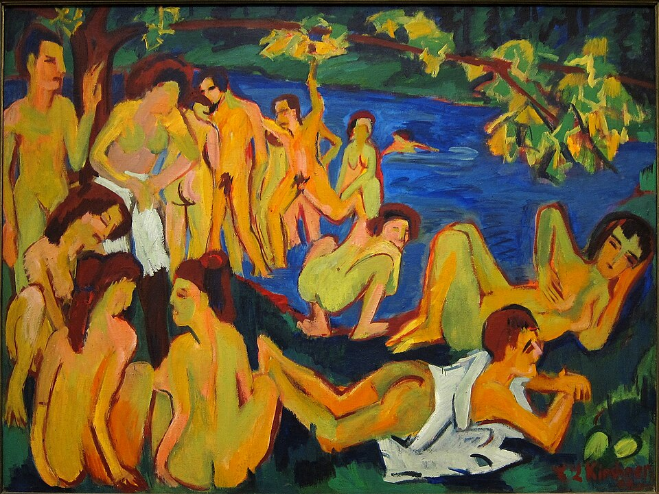
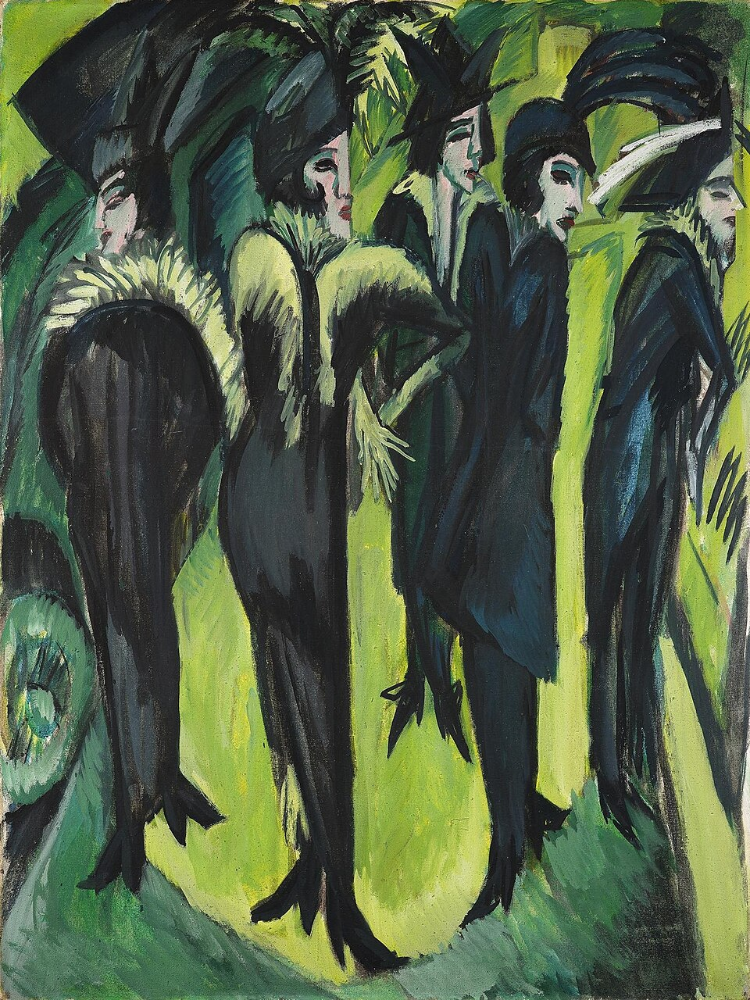
ブリュッケ結成ドレスデンで
生活の自由も追求 - 1911
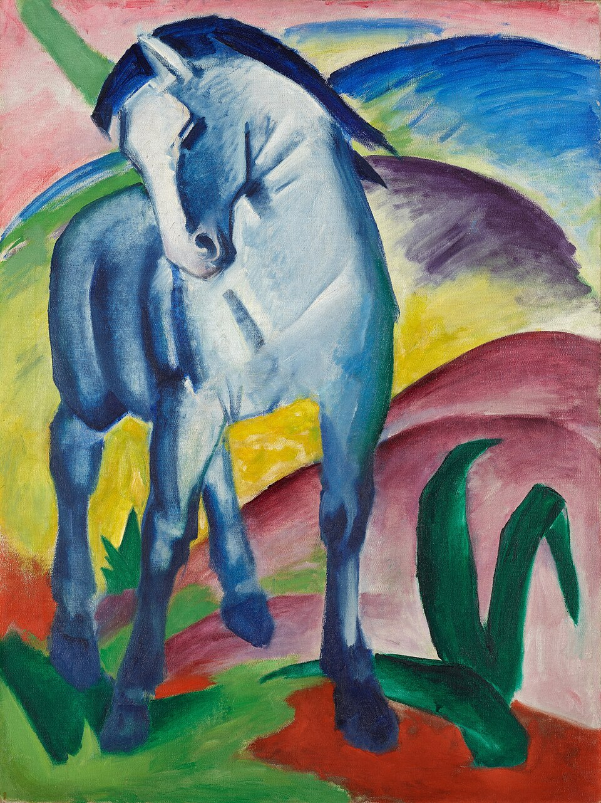
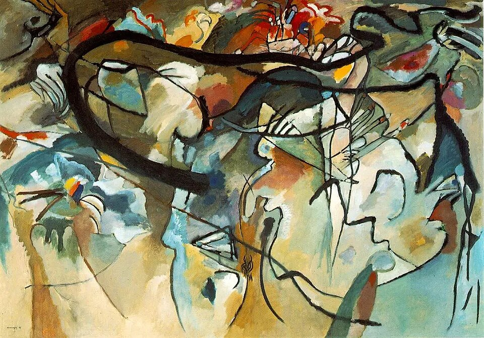
青騎士結成ミュンヘンで
精神から始まる芸術 - 1910年代
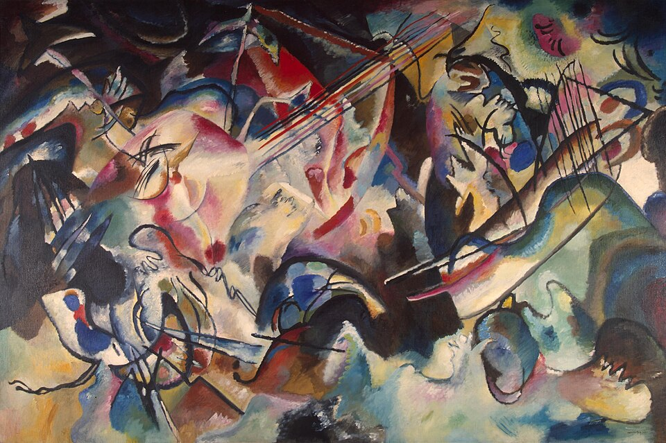
無対象絵画へカンディンスキー
色と形だけで描く
印象主義と何が違うか
図版の出典
- 《叫び（1893年、ノルウェー国立美術館版）》エドヴァルド・ムンク：出典（Public domain（PD-Art／PDM））
- 《ミュンヘンのビアガーデン》マックス・リーバーマン：出典（CC BY-SA 4.0）
- 《モーリッツブルクの水浴者たち》エルンスト・ルートヴィヒ・キルヒナー：出典（Public domain（PD-Art／PDM））
- 《街の五人の女》エルンスト・ルートヴィヒ・キルヒナー：出典（Public domain（PD-Art／PDM））
- 《青い馬I》フランツ・マルク：出典（Public domain（PD-Art／PDM））
- 《コンポジションV》ワシリー・カンディンスキー：出典（Public domain（PD-Art／PDM））
- 《コンポジションVI》ワシリー・カンディンスキー：出典（Public domain（PD-Art／PDM））
重要人物
表現主義の先駆け

ドイツの美術界
ブリュッケ
青騎士
- ワシリー・カンディンスキー画家青騎士を命名。無対象絵画へ進む抽象絵画の祖
- フランツ・マルク画家動物を抽象化して生命感を表す。三十六歳で戦死
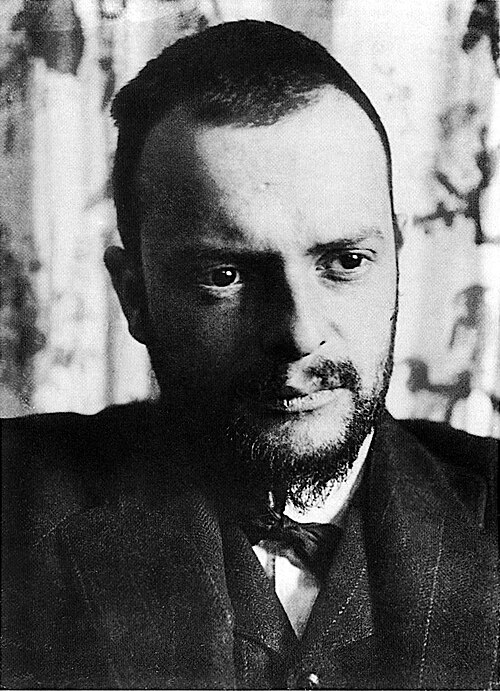
パウル・クレー画家独特の抽象画。シュルレアリスムの先駆け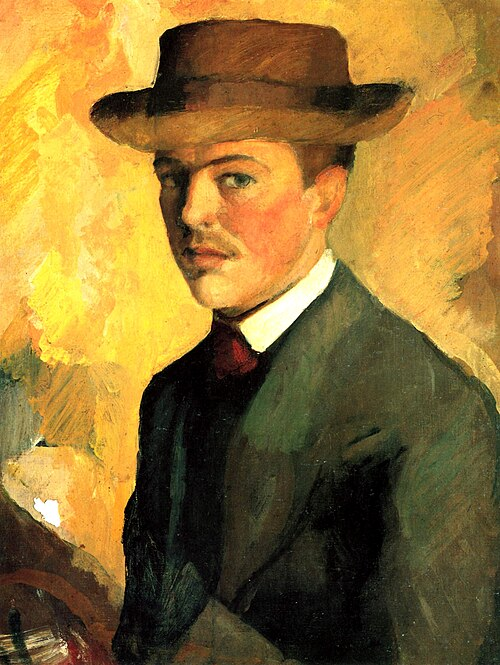
アウグスト・マッケ画家キュビスムのような様式も取り入れる- ガブリエーレ・ミュンター画家カンディンスキーのパートナー。青騎士に集う
影響を与えた画家


肖像・図版の出典
- 《煙草を持つ自画像》エドヴァルド・ムンク、1895年、オスロ国立美術館：出典（Public domain）
- 《自画像》フィンセント・ファン・ゴッホ、1887年、シカゴ美術館：出典（Public domain）
- 《兵士としての自画像》キルヒナー、1915年、アレン記念美術館：出典（Public domain）
- パウル・クレーの写真、1911年：出典（Public domain）
- 《帽子をかぶった自画像》アウグスト・マッケ、1909年：出典（Public domain）
- 《縞のTシャツの自画像》アンリ・マティス、1906年、デンマーク国立美術館：出典（Public domain）
- 《クロード・モネ》ピエール＝オーギュスト・ルノワール、1875年、オルセー美術館：出典（Public domain）
表現主義の見方
内から湧く感情を絵にする
動画 1:49～20世紀初頭、ドイツを中心に展開した表現主義は、フォーヴィスムに影響され、自然をそのまま写さない手法で現代美術への道を開きました。フォーヴィスムは、アンリ・マティスを中心に、激しい色彩や変形された形を特徴とした運動です。表現主義も内から湧く感情を重視し、それを絵画に反映しようとしました。その結果、見たものをそのまま再現せず、対象を抽象化することも多くなります。
広い意味では、見えない内面的な感情を表す芸術も表現主義と呼ばれます。フォーヴィスムをフランス版の表現主義と捉え、ドイツでの運動をドイツ表現主義として区別することもあります。先行するエル・グレコ、ゴッホ、ムンクの作品も、表現主義的と評されます。
定義には曖昧さもありますが、強調した線、形、色、鮮烈な主題が特徴に挙げられます。ゴッホやムンクのうねる線と非現実的な色彩も、画家の主観を重視したものです。自分にはこう見える、こう描くという思いを絵へ反映することは、客観性への反発とも捉えられます。
象徴主義との違いとドイツの運動
動画 3:15～感情を表す点では象徴主義と重なります。同じ不安でも、ルドンは目を持つ不気味な気球を象徴として描きます。一方、《叫び》のムンクは、自然を貫く果てしない叫びに耳を塞ぐ人物だけでなく、うねる背景や自然を逸脱した人物の形からも感情を伝えます。描くものによって不可視の概念を示す象徴主義と、描き方にも感情を込める表現主義という違いです。

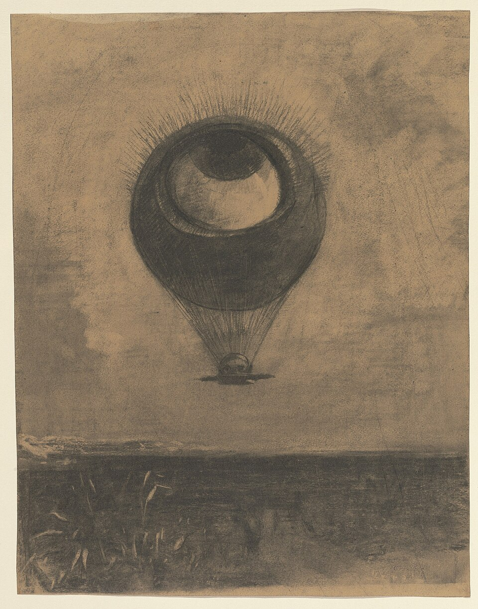
画像を拡大 ＋《目＝気球》
- 作者
- オディロン・ルドン
- 制作時期
- 1878年
- 所在地・所蔵
- ニューヨーク近代美術館
- 素材・形式
- 色紙に木炭・チョーク
- 原題
- Œil-ballon
- 別名
- Eye-Balloon
出典・画像について

《叫び（1893年、ノルウェー国立美術館版）》
- 作者
- エドヴァルド・ムンク
- 制作時期
- 1893年
- 所在地・所蔵
- ノルウェー国立美術館、オスロ
- 素材・形式
- 厚紙にテンペラ・ワックスクレヨン
- 原題
- Skrik
- 別名
- The Scream／Der Schrei der Natur
出典・画像について
両者は排他的ではありません。《嫉妬》では、親しい男女を羨ましそうに見つめる男性が嫉妬を象徴しています。一方、その男性の顔以外は、どこか抽象的で、もはやどうでもよいかのように描かれています。その描き方にも感情が現れるため、ムンクは象徴主義でも表現主義でもあるといえます。

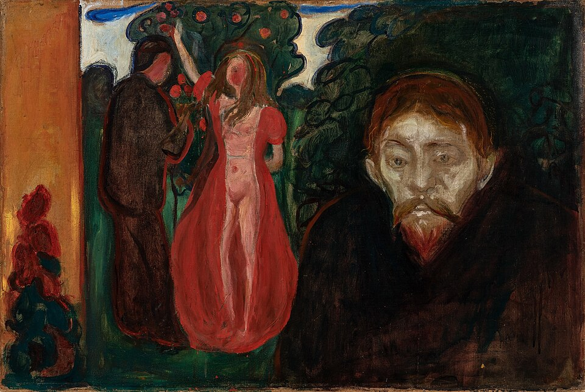
画像を拡大 ＋《嫉妬》
- 作者
- エドヴァルド・ムンク
- 制作時期
- 1895年
- 所在地・所蔵
- KODE美術館、ベルゲン（ラスムス・メイエル・コレクション）
- 素材・形式
- カンヴァスに油彩
- 原題
- Sjalusi
- 別名
- Jealousy
出典・画像について
以前にも表現主義的な画家はいましたが、ドイツでは組織的な運動となり、絵画のほか建築、音楽、演劇にも波及しました。背景には、行き過ぎた自然主義や印象主義への反発があります。印象を意味するインプレッションに、表現を意味するエクスプレッションを対置しました。
ドイツの社会と美術
三十年戦争とフランスとの違い
動画 5:14～一般的な美術史でドイツが大きく取り上げられる時代は、16世紀の北方ルネサンスに遡ります。デューラー、グリューネヴァルト、ホルバインらは、イタリアのルネサンスとドイツの伝統を合わせて制作しました。その後、ルターに始まる宗教改革、カトリックとプロテスタントの三十年戦争が、国土を荒廃させ、産業と美術の停滞を招きました。
教会の力が弱まり、カトリックの対抗宗教改革を支えたバロック美術の流れには乗りにくくなりました。同じプロテスタントのオランダでは聖人像を必要としない肖像画や風景画が発展しましたが、それは安定した経済と、絵を購入する市民層があったからです。産業も停滞したドイツでは、描いても購入者が乏しい状況だったと考えられます。
歴史的背景の説明について
動画は三十年戦争をプロテスタント側の勝利として説明しますが、政治と宗教の複合的な戦争であり、1648年の和平文書には宗派を理由とする排除を禁じる条項などがあります。本教材では一方の宗派の単純な勝利としては記さず、戦争後の経済・注文主の変化という元の解説の筋を残しました。ドイツ全域の美術が一様に停滞したという一般化にも留保があります。
フランスは絶対王政を進め、ルイ十四世と宮廷画家ル・ブランを中心に芸術の制度を整えました。三十年戦争終結の1648年には絵画彫刻アカデミーが設けられます。一方、ドイツで同様の組織が設立されたのは1696年で、約五十年の隔たりがあったとされます。
アカデミー設立年の訂正
動画の1698年は、ベルリン芸術アカデミーの公式沿革に従い1696年へ訂正しました。フランス1648年との隔たりは約五十年という説明を維持します。
確認資料：ベルリン芸術アカデミー公式沿革
文学・音楽と帝国の工業化
動画 6:56～ドイツは他国よりすべてが遅れたわけではありません。ルター派の聖書印刷が進み、庶民にドイツ語の読み書きが広がったことは、ゲーテのような作家や、カントをはじめとするドイツ観念論の哲学者を生む背景となりました。
ハプスブルク家の支配したドイツ語圏のオーストリアでは、他国の関心を引くため、観劇や音楽会を積極的に開き、政府が音楽家を支援しました。ウィーンは芸術の都となり、ドイツで生まれてウィーンで活躍する音楽家も多く現れます。一方、美術は他国を追う傾向が続き、ビーダーマイヤーやナザレ派などもありましたが、19世紀半ばにも宮廷美術が主流でした。ロココや新古典主義を継ぐ点では、古い傾向が残っていたのです。

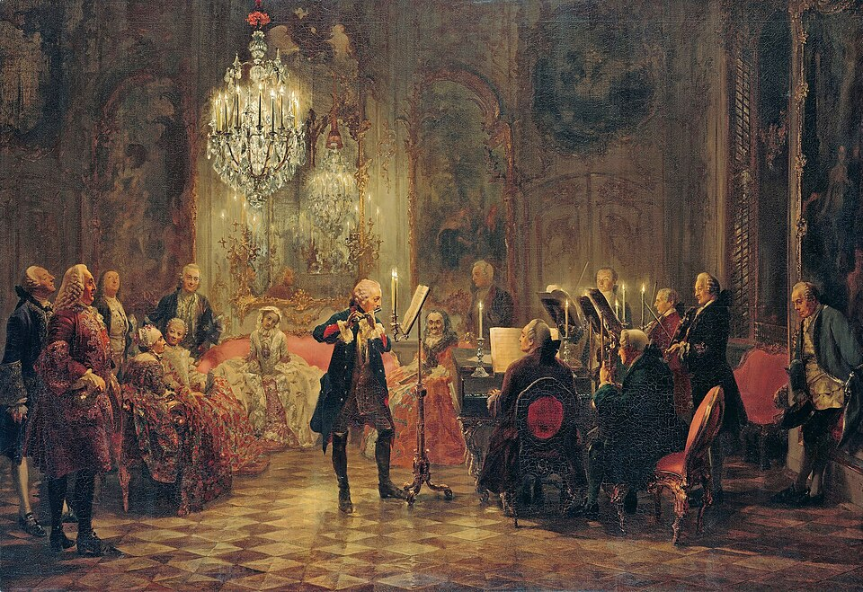
画像を拡大 ＋《サンスーシ宮殿でのフリードリヒ大王のフルート・コンサート》
- 作者
- アドルフ・フォン・メンツェル
- 制作時期
- 1850～1852年
- 所在地・所蔵
- 旧国立美術館、ベルリン
- 素材・形式
- カンヴァスに油彩
- 原題
- Flötenkonzert Friedrichs des Großen in Sanssouci
- 別名
- Frederick the Great Playing the Flute at Sanssouci
転機は1870年に始まる普仏戦争です。ナポレオン三世が失脚する契機となり、勝利したドイツは諸国をまとめて帝国を宣言しました。遅れていた工業化も進み、イギリスに並ぶ工業国となります。これは現代へつながる工業大国ドイツの形成でもありました。産業の発展は市民階級の力も強めました。
レアリスムと印象主義の伝来
動画 8:25～フランスでは産業革命による貧富の差に、クールベやドーミエらのレアリスムが向き合いました。ドイツで工業化の問題が目立つのは、帝国成立から約二十年後の1890年代です。普仏戦争後の写実的な絵画もレアリスムの影響を受けましたが、市民生活の悲惨さだけでなく、聖書を読み祈る女性の精神を重んじる作品もあります。フランスと同じ写実の方法でも、社会の発展段階によって表すものは異なりました。

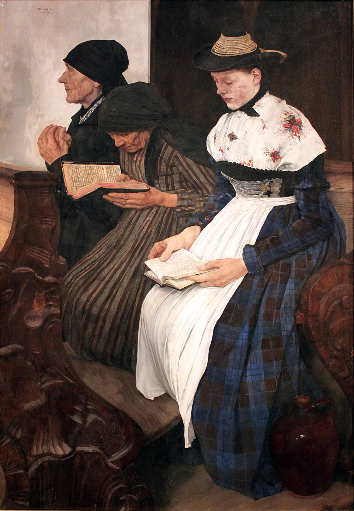
画像を拡大 ＋《教会の中の三人の女》
- 作者
- ヴィルヘルム・ライブル
- 制作時期
- 1882年
- 所在地・所蔵
- ハンブルク美術館
- 素材・形式
- マホガニー板に油彩
- 原題
- Drei Frauen in der Kirche
- 別名
- Three Women in Church
出典・画像について
まもなく印象主義も伝わります。パリで学んで持ち帰ったマックス・リーバーマンらは、ブルジョワ階級の生活を描きました。その頃の印象主義は、オランダの写実的なハーグ派とも混ざり、フランスでの登場当初ほど荒い筆触ではなく、市民にも受け入れられやすくなっていました。

《ミュンヘンのビアガーデン》
- 作者
- マックス・リーバーマン
- 制作時期
- 1884年
- 所在地・所蔵
- バイエルン州立絵画コレクション、ノイエ・ピナコテーク
- 素材・形式
- 板に油彩
- 原題
- Münchner Biergarten
- 別名
- Munich Beer Garden
- 動画の年代
- 1883年
出典・画像について
動画の年代 1883年 と、確認済みの掲載年代 1884年 を分けて記録。
画像出典：Yelkrokoyade（写真・画像提供）／マックス・リーバーマン（作品）
CC BY-SA 4.0
作品情報：作品・画像・利用条件 · 所蔵館の作品ページ
ムンク事件とベルリン分離派
動画 9:44～ドイツは印象主義などの革新を受け入れつつも、支配的な制度がなかったわけではありません。1888年に即位したヴィルヘルム二世と、皇帝お気に入りの新古典主義画家アントン・フォン・ヴェルナーがその代表です。歴史画を数多く描き、アカデミーの会長でもあったヴェルナーのもとでは、フランスと同じように展覧会が開かれていました。1892年にはムンクが招かれます。
展示作品が伝統を大きく外れたため、ベルリンの新聞から激しく批判され、七日間で撤去されました。当時はノルウェーの風景画に人気があり、ベルリンで成功したノルウェー出身の画家ノルマンの紹介でムンクが招待されたのでした。

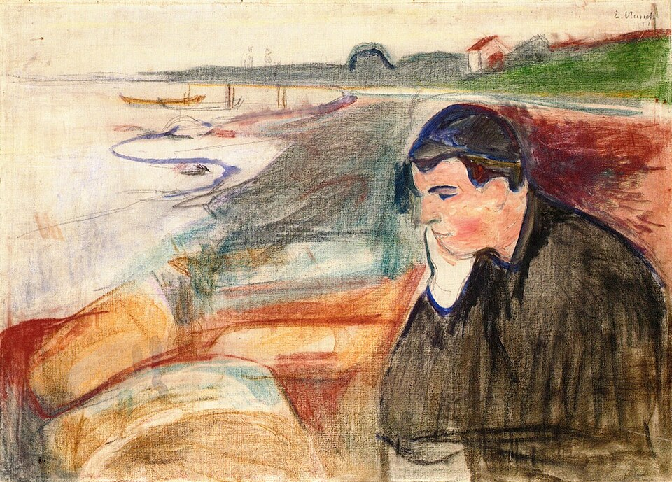
画像を拡大 ＋《夕べ／憂鬱》
- 作者
- エドヴァルド・ムンク
- 制作時期
- 1891年
- 所在地・所蔵
- ムンク美術館、オスロ
- 素材・形式
- カンヴァスに油彩・ワックスクレヨン・鉛筆
- 原題
- Evening. Melancholy
- 別名
- Abend/Melancholie
出典・画像について
ムンク事件に怒ったリーバーマンらは、1898年、伝統から独立するベルリン分離派を結成しました。国立美術館長がフランス印象派を購入しようとして、皇帝やアカデミーに反対されたことも背景にあります。
分離派は、フランスの印象派ほどの騒動なく受け入れられました。保守層は外国人の絵を伝統ある官展へ置くことを嫌ったため、そうした作品を引き受ける別の場の登場は、かえって都合がよかったのです。しかしリーバーマンの印象派も既に世界では下火で、若い芸術家には、ドイツ版アール・ヌーヴォーのユーゲントシュティールなどが流行していました。
ケーテ・コルヴィッツと労働者
動画 11:58～やがて資本主義の矛盾が露わになり、貧富の格差と労働者の苦労を描く作品が現れます。女性画家ケーテ・コルヴィッツは1891年、医師の夫とベルリンの貧民街へ移り、夫の患者や周囲の人々の悲惨な暮らしを描きました。初期の写実的な様式から次第に感情表現を強め、ムンクとともに表現主義の先駆けとなります。

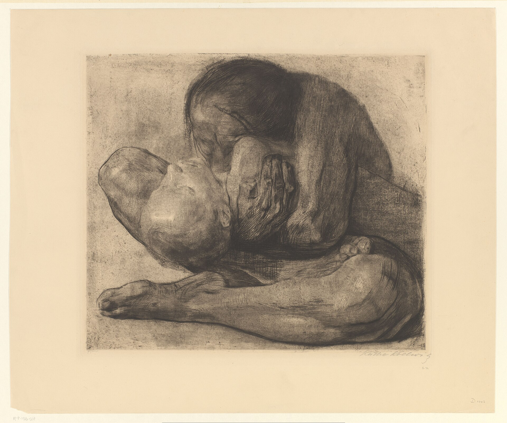
画像を拡大 ＋《死んだ子供を抱く女》
- 作者
- ケーテ・コルヴィッツ
- 制作時期
- 1903年
- 所在地・所蔵
- 動画の刷り個体の所蔵先未確定
- 素材・形式
- エッチング・ドライポイント・ソフトグラウンド等
- 原題
- Frau mit totem Kind
- 別名
- Woman with Dead Child
出典・画像について
コルヴィッツ《死んだ子供を抱く女》のアムステルダム国立美術館所蔵の刷り。
画像出典：Rijksmuseum / Wikimedia Commons
CC0
作品情報：画像出典・利用条件
制作メモ
動画732秒の刷りとは別の刷り（同じ版）。
ブリュッケ――生活と造形の革新
建築学生が作ったブリュッケ
動画 12:29～20世紀には、1905年結成のブリュッケと、1911年結成の青騎士が登場しました。印象主義の客観性のもとで軽視された画家の感情を取り戻すだけでなく、そこで主題とされた市民階級の暮らしそのものにも反発しました。
1905年、首都ベルリンのやや南に位置するドレスデンでブリュッケが結成されました。初期メンバーは、キルヒナー、ブライル、ヘッケル、ロットルフという、ドレスデン工科大学出身の四人の建築学生です。大学では建築以外も幅広く学べましたが、正式な絵画教育はキルヒナーが一年ほど受けた程度で、他の三人はほぼ独学でした。ドイツ語の「橋」という名は、古い芸術から新しい芸術へ橋渡しする意味とされます。
創作と生活の自由
動画 13:33～1906年の綱領では、芸術を愛し創造する新しい世代への信頼を掲げ、若者の結集を呼び掛けました。古い勢力に対して創作と生活の自由を獲得し、創作へ駆り立てるものを直接、偽りなく表す者を仲間とするという考えです。重要なのは、作品だけでなく生活の自由にも触れている点です。
メンバーは、科学によって便利になっても、文明に毒された都市生活が社会を堕落させると考えました。ヨーロッパ全体が似た発展をした結果、生活は没個性的になり、それを描く自然主義や印象主義も画家の個性を失わせる、と批判したのです。
キルヒナーと生活の革新
動画 14:41～中心人物エルンスト・キルヒナーは、ドレスデンの民族博物館で、当時「原始的」と捉えられていた美術品を目にし、地域ごとの特色の違いに注目しました。ドイツに根付いた芸術を考え、グリューネヴァルトの精神性やデューラーの版画にも注目します。ゴッホとムンクの内面を表す方法にも影響され、素朴で力強い色彩の作品を制作しました。当時あまり作られなくなっていた版画も用い、ドイツの大切な文化として押し出したのです。

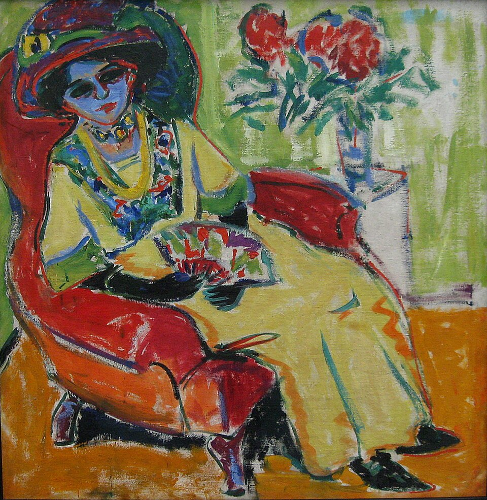
画像を拡大 ＋《ドードーの肖像（座る女）》
- 作者
- エルンスト・ルートヴィヒ・キルヒナー
- 制作時期
- 1910年
- 所在地・所蔵
- ピナコテーク・デア・モデルネ、ミュンヘン
- 素材・形式
- 油彩・カンヴァス
- 原題
- Bildnis Dodo (Sitzende Dame)
- 別名
- Sitzende Dame (Dodo)／Portrait of Dodo (Seated Woman)
- 動画の年代
- 1907年
出典・画像について
動画の年代 1907年 と、確認済みの掲載年代 1910年 を分けて記録。
画像出典：Rufus46（写真・画像提供）／エルンスト・ルートヴィヒ・キルヒナー（作品）
Public domain（PD-Art／PDM）
作品情報：作品・画像・利用条件 · 所蔵館の作品ページ
903秒表示はパイプの自画像1905。帽子パイプ正面横長黒白版画、同版刷り・所蔵・権利を確定できず保留。動画年をdate_videoに保持。
《パイプの自画像（版・刷り未確定）》
- 作者
- エルンスト・ルートヴィヒ・キルヒナー
- 制作時期
- 不明
- 所在地・所蔵
- 未確定
- 素材・形式
- 動画の年代
- 1905年
出典・画像について
動画の年代 1905年 と、確認済みの掲載年代 不明 を分けて記録。
夏には女性の友人らとドレスデン近郊のモーリッツブルク湖畔で暮らし、衣服に縛られない生活の中で自然な態度を描きました。水浴図自体は珍しくなくても、男女の混浴をあけすけに扱う点は、当時のブルジョワ道徳に反します。描き方だけでなく、主題も印象主義とは異なるのです。人間本来の姿を問い直す生活と、作品を通じた社会批判は、フォーヴィスムとの違いともされます。

《モーリッツブルクの水浴者たち》
- 作者
- エルンスト・ルートヴィヒ・キルヒナー
- 制作時期
- 1909～1926年
- 所在地・所蔵
- テート
- 素材・形式
- 油彩・カンヴァス
- 原題
- Badende Moritzburg
- 別名
- Bathers at Moritzburg
- 動画の年代
- 1909年
出典・画像について
動画の年代 1909年 と、確認済みの掲載年代 1909～1926年 を分けて記録。
画像出典：Ernst Ludwig Kirchner（写真・画像提供）／エルンスト・ルートヴィヒ・キルヒナー（作品）
Public domain（PD-Art／PDM）
作品情報：作品・画像・利用条件 · 所蔵館の作品ページ
新分離派とベルリン移転
動画 16:02～オットー・ミュラー、マックス・ペヒシュタイン、約一年で脱退したエミール・ノルデらも参加しました。しかし1910年、ペヒシュタインら表現主義の画家は、リーバーマンの分離派展への出品を拒否されます。結成から十二年の分離派にも保守性が芽生えていたのです。同年、ペヒシュタインを中心に新分離派が作られ、ブリュッケのメンバーも加わりました。
1911年には、設立者ペヒシュタインが役員から落選し、ブリュッケも新分離派を脱退しました。さらに翌1912年、ペヒシュタインは元の分離派展へ出品してブリュッケから追放されます。革新を掲げる集団の間にも、受け入れの限界や対立があったのです。
1911年、活動拠点をドレスデンからベルリンへ移したことは崩壊の始まりとなりました。キルヒナーは首都の退廃的な姿を描きましたが、都市での生活の中で仲間のつながりは薄れ、1913年に仲違いから解散します。短命でも、生活の在り方に注目した点は斬新でした。地域的に活動したブリュッケに少し遅れ、国際的な集まりとして生まれたのが青騎士です。

《街の五人の女》
- 作者
- エルンスト・ルートヴィヒ・キルヒナー
- 制作時期
- 1913年
- 所在地・所蔵
- ルートヴィヒ美術館、ケルン
- 素材・形式
- 油彩・カンヴァス
- 原題
- Fünf Frauen auf der Straße
- 別名
- Five Women on the Street
出典・画像について
青騎士と抽象絵画
青騎士の自由な集まり
動画 17:52～青騎士は1911年、ベルリンと並ぶ芸術都市ミュンヘンで結成されました。中心はロシア出身のワシリー・カンディンスキーと、ドイツ出身のフランツ・マルクです。名付けたのはカンディンスキーで、二人とも青を好み、カンディンスキーは騎士、マルクは馬が好きだったことが名称に結び付いたとされます。パウル・クレー、アウグスト・マッケ、カンディンスキーのパートナー、ガブリエーレ・ミュンターらも同じ理念に集いました。
ブリュッケのような会員制ではありませんが、すべての芸術は精神から始まるという考えを共有しました。カンディンスキーは風景を、マルクは動物を多く描き、豊かな色彩を使って精神性を表します。マッケはキュビスムのような別の様式も取り入れ、表し方は一様ではありませんでした。

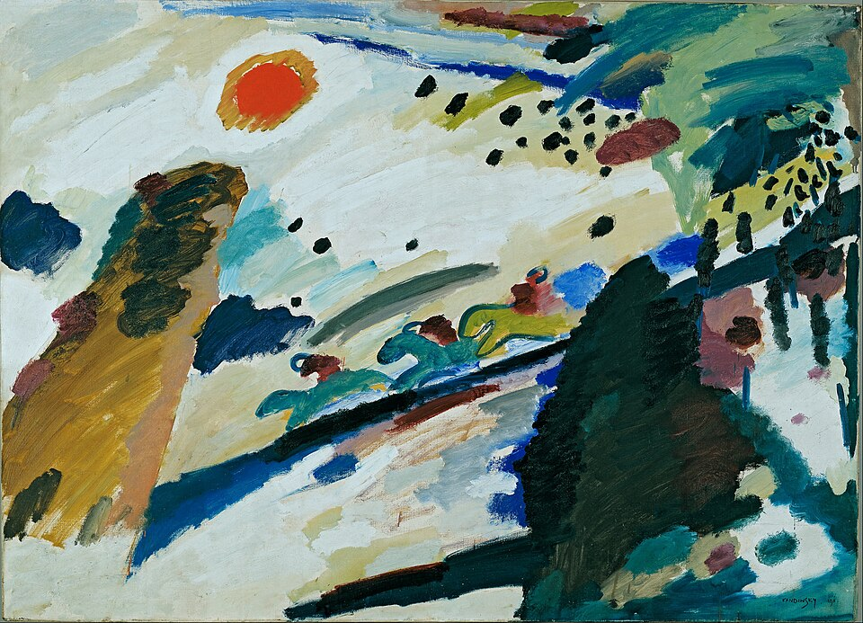
画像を拡大 ＋《ロマンチックな風景》
- 作者
- ワシリー・カンディンスキー
- 制作時期
- 1911年
- 所在地・所蔵
- レンバッハハウス美術館、ミュンヘン
- 素材・形式
- 油彩・カンヴァス
- 原題
- Romantische Landschaft
- 別名
- Romantic Landscape
出典・画像について

《青い馬I》
- 作者
- フランツ・マルク
- 制作時期
- 1911年
- 所在地・所蔵
- レンバッハハウス美術館、ミュンヘン
- 素材・形式
- 油彩・カンヴァス
- 原題
- Blaues Pferd I
- 別名
- Blue Horse I
出典・画像について

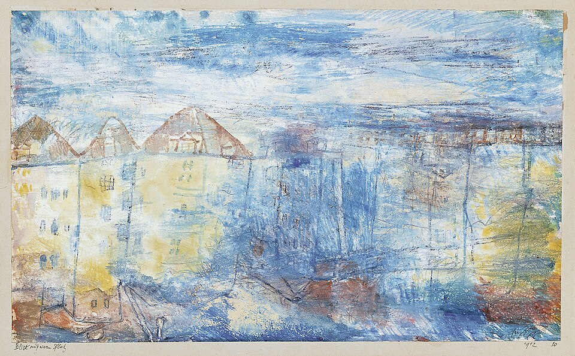
画像を拡大 ＋《広場の眺め》
- 作者
- パウル・クレー
- 制作時期
- 1912年
- 所在地・所蔵
- ティッセン＝ボルネミッサ美術館、マドリード
- 素材・形式
- グアッシュ、ワックスクレヨン・紙（厚紙に貼付）
- 原題
- Blick auf einen Platz
- 別名
- View onto a Square／Vista a una plaza
出典・画像について

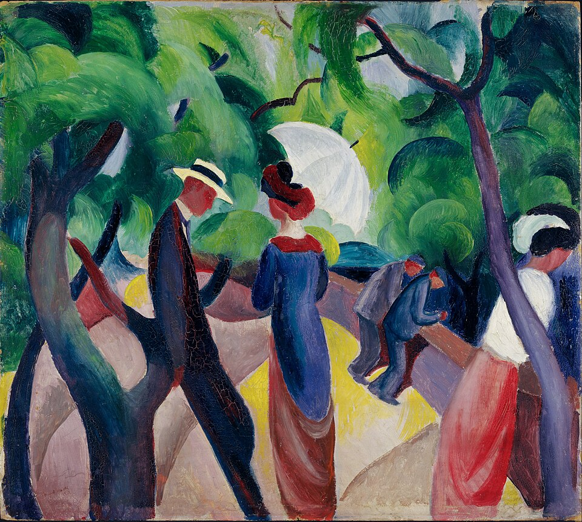
画像を拡大 ＋《散歩（プロムナード）》
- 作者
- アウグスト・マッケ
- 制作時期
- 1913年
- 所在地・所蔵
- レンバッハハウス美術館、ミュンヘン
- 素材・形式
- 油彩・厚紙
- 原題
- Promenade
出典・画像について
公式GMS656は1909油彩厚紙、花帽・肩越し顔・紫襟一致。動画1910と分離。Commons同作の自由画像未発見、公式©VG Bild-Kunst、掲載保留し既知museum_urlを保持。
《マリアンネ・フォン・ヴェレフキンの肖像》
- 作者
- ガブリエーレ・ミュンター
- 制作時期
- 1909年
- 所在地・所蔵
- レンバッハハウス美術館
- 素材・形式
- 油彩・厚紙
- 原題
- Bildnis Marianne von Werefkin
- 動画の年代
- 1910年
出典・画像について
動画の年代 1910年 と、確認済みの掲載年代 1909年 を分けて記録。
作品情報：所蔵館の作品ページ
カンディンスキーとモネの《積みわら》
動画 18:50～抽象絵画の祖とされるカンディンスキーの歩みは、風変わりなものでした。青騎士の誕生も、《コンポジションV》がミュンヘン新芸術家協会の展覧会に拒否されたことが契機です。画家として出発したのは三十歳頃で、教授職を捨てて絵の道へ進みました。

《コンポジションV》
- 作者
- ワシリー・カンディンスキー
- 制作時期
- 1911年
- 所在地・所蔵
- 個人蔵
- 素材・形式
- 油彩・カンヴァス
- 原題
- Composition V
- 別名
- Komposition V／Das jüngste Gericht
きっかけは、印象派の巨匠クロード・モネの《積みわら》の連作との出会いでした。当初は積みわらが何かを理解できず、何が描かれているのか分からなかったのに、鮮やかな色と輝く表現に心を動かされます。対象が分からなくても人は感動できる、という発見です。初期にはモネの影響を受け、印象派に通じる風景を描きました。

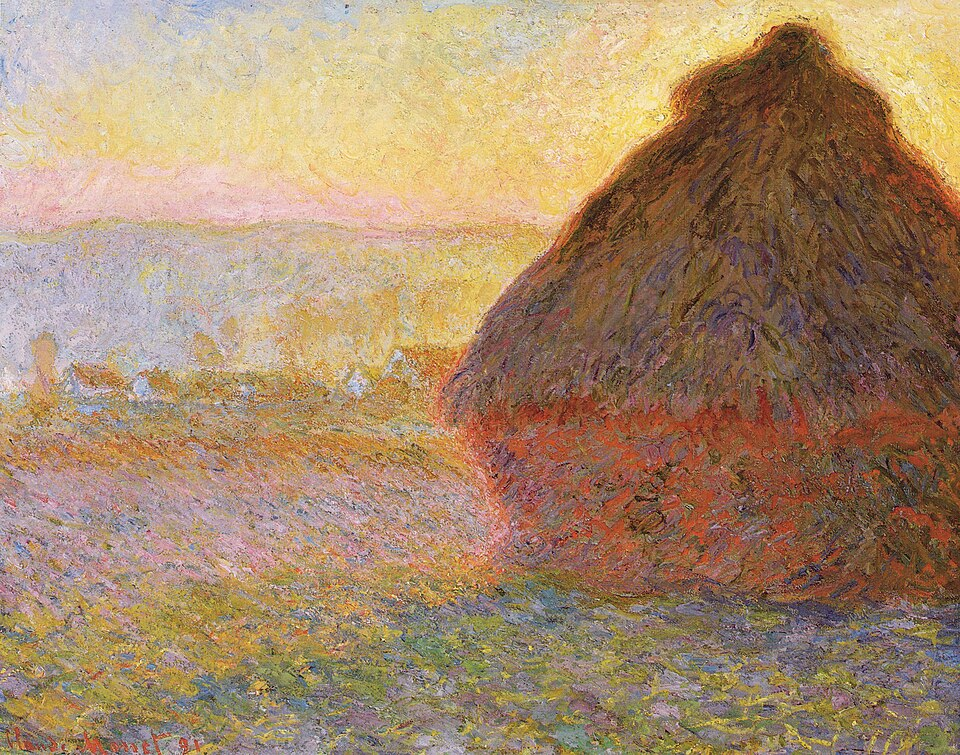
画像を拡大 ＋《積みわら（日没）》
- 作者
- クロード・モネ
- 制作時期
- 1891年
- 所在地・所蔵
- ボストン美術館
- 素材・形式
- 油彩・カンヴァス
- 原題
- Grainstack (Sunset)
- 別名
- Meule, soleil couchant
- 動画の年代
- 1890年
出典・画像について
動画の年代 1890年 と、確認済みの掲載年代 1891年 を分けて記録。
画像出典：Claude Monet（写真・画像提供）／クロード・モネ（作品）
Public domain（PD-Art／PDM）
作品情報：作品・画像・利用条件 · 所蔵館の作品ページ

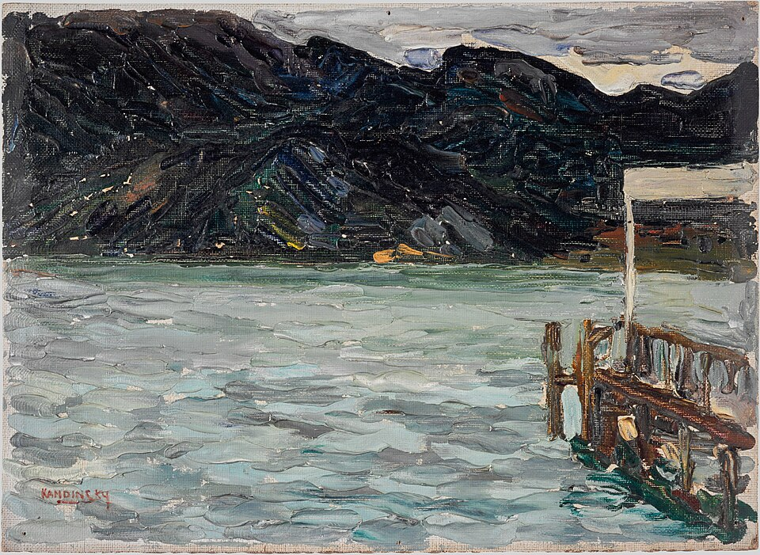
画像を拡大 ＋《コッヘル、湖と桟橋I》
- 作者
- ワシリー・カンディンスキー
- 制作時期
- 1902年
- 所在地・所蔵
- 国立近代美術館／ポンピドゥー・センター
- 素材・形式
- 油彩・カンヴァスボード
- 原題
- Kochel, See mit Bootsteg I
- 別名
- Kochel, lac et passerelle I／Kochel, Lake and Pier I
出典・画像について
対象を消した無対象絵画
動画 19:53～1906年にマティスらフォーヴィスムを知ったことも転機です。色や筆触で対象を変形できるなら、画面から消すこともできるのではないかと考えました。1910年頃の実験作《牛》では、下部の牛が風景へ溶け込み、消えかけています。具体的な対象や主題なしでも、色と形だけで絵は独立すると考え、精神を映す鏡として抽象画へ進みます。

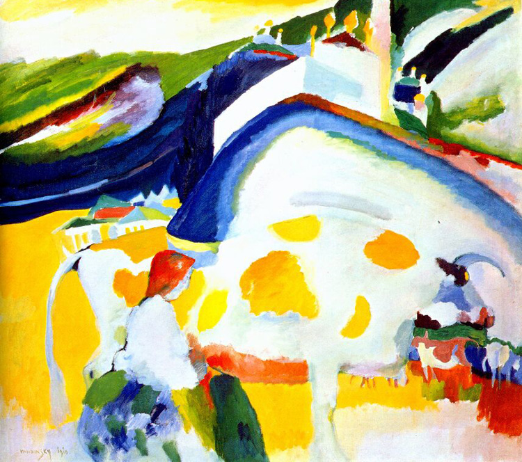
画像を拡大 ＋《牛》
- 作者
- ワシリー・カンディンスキー
- 制作時期
- 1910年
- 所在地・所蔵
- レンバッハハウス美術館
- 素材・形式
- 油彩・カンヴァス
- 原題
- Die Kuh
- 別名
- The Cow／La Vache
出典・画像について
どれほど不自然な色や形でも、例えばリンゴと分かれば、見る人はそれにまつわる余計なものを連想します。それが精神性の表現を妨げると考えたのです。抽象化して連想を外せば、画家の精神性そのものを伝えられます。《積みわら》を理解できなくても感動した経験から続く考えであり、初めから題材を知っていたら、歩みは違ったかもしれません。
実験の末に到達したのが、無対象絵画のコンポジション・シリーズです。コンポジションは作曲とも訳せます。音楽のように音を色へ、リズムを形へ置き換えました。幼い頃からクラシック音楽に親しみ、共感覚を持っていたともいわれます。具体的な題材を描かなくても精神性を表現する試みでした。

《コンポジションVI》
- 作者
- ワシリー・カンディンスキー
- 制作時期
- 1913年
- 所在地・所蔵
- エルミタージュ美術館
- 素材・形式
- 油彩・カンヴァス
- 原題
- Composition VI
仲間の抽象表現と青騎士の解散
動画 21:46～青騎士の仲間もカンディンスキーに触発されるかのように、程度は違っても抽象へ向かいました。マルクは動物を抽象化して、自然に生きる動物の生命感や力強さを表そうとしました。クレーは具象のようで具象ではない独特の抽象画を描き、シュルレアリスムの先駆けとなります。刺激し合いながら、各自の様式を作っていきました。

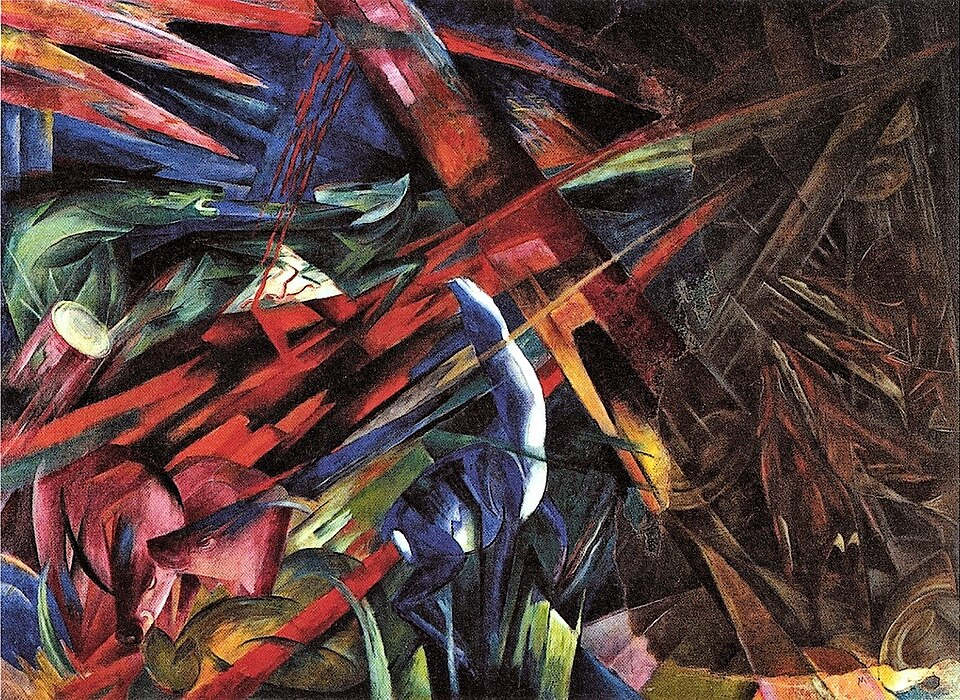
画像を拡大 ＋《動物の運命》
- 作者
- フランツ・マルク
- 制作時期
- 1913年
- 所在地・所蔵
- バーゼル市立美術館
- 素材・形式
- 絵具・カンヴァス
- 原題
- Tierschicksale
- 別名
- The Fate of the Animals
出典・画像について

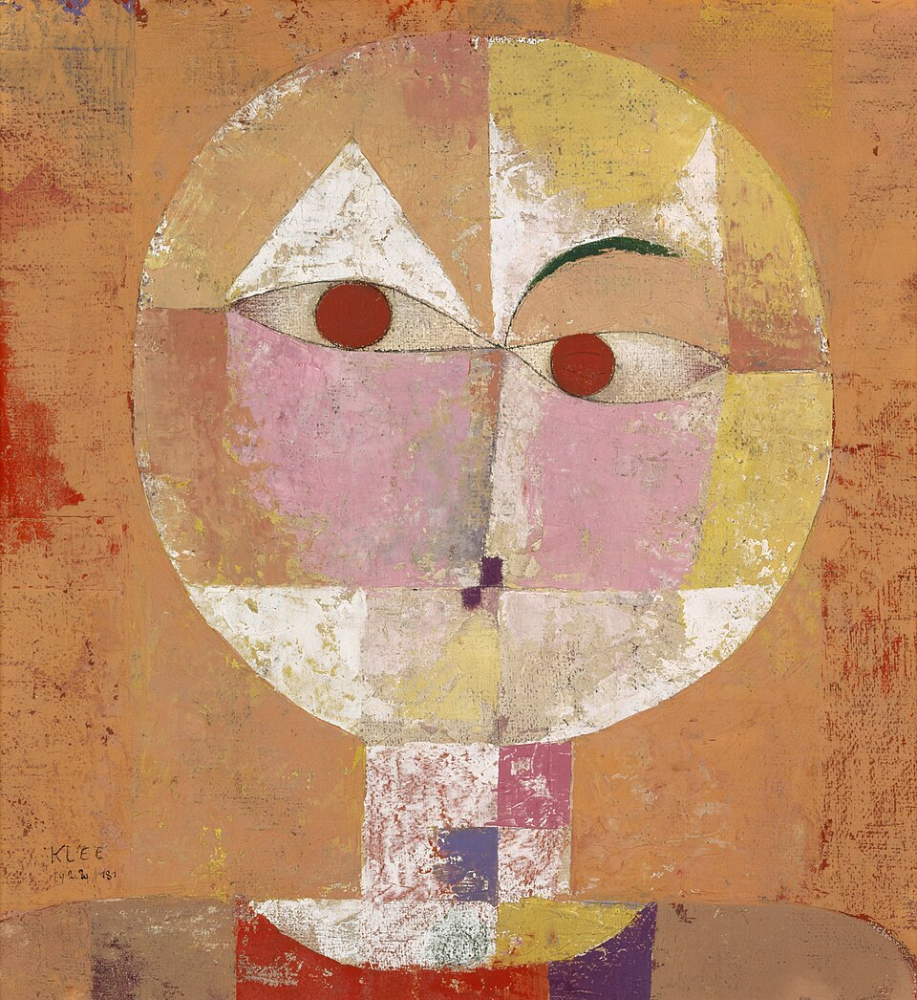
画像を拡大 ＋《セネシオ》
- 作者
- パウル・クレー
- 制作時期
- 1922年
- 所在地・所蔵
- バーゼル市立美術館
- 素材・形式
- 油彩・マルフラージュ、カンヴァス
- 原題
- Senecio (Baldgreis)
- 別名
- Senecio
出典・画像について
1911年結成の青騎士は、わずか三年、二回の展覧会と少数の年鑑を残して終わりました。1914年の第一次世界大戦によって、仲間はドイツ、ロシア、スイスなどへ離散します。従軍したマルクは三十六歳、マッケは二十七歳で命を落としました。戦争は若い才能も奪ったのです。それでもカンディンスキーとクレーは、悲しみを抱えつつ抽象絵画の巨匠として活動し、後世へ大きな影響を残しました。
要点まとめ
- 表現主義は、画家の内面的な感情を、主観的な色や形に反映させる。象徴主義と重なりながら、描き方そのものでも感情を伝える。
- ドイツでは工業化と市民社会の変化、アカデミーやベルリン分離派との対立が、新しい運動の背景となった。
- ケーテ・コルヴィッツとムンクは、感情を重んじる表現で後の運動に影響を与えた。
- 1905年結成のブリュッケは、古い芸術から新しい芸術への橋渡しを目指し、創作と生活の自由を掲げた。
- キルヒナーらは版画や力強い色彩、モーリッツブルクの混浴など、表現方法と主題の両面で既存の価値観に挑んだ。
- 1911年の青騎士は、カンディンスキーとマルクを中心とする自由な集まりで、芸術が精神から始まるという理念を共有した。
- カンディンスキーはモネの《積みわら》やフォーヴィスムに学び、対象が分からなくても色と形で感動を伝えられると考え、無対象絵画へ進んだ。
- 第一次世界大戦で青騎士は離散し、マルクとマッケは戦死した。カンディンスキーとクレーは、その後も抽象絵画へ影響を残した。
確認問題
答えを考えてから開いてください。選択問題は選ぶとすぐ正誤と解説が出ます（選択肢の順番は開くたびに変わります）。各問題のリンクから該当の章や作品カードへ戻れます。
選択問題：0／4問回答・正解0
A. 一問一答答えを考えてから開く
問1ブリュッケというドイツ語は何を意味するか。
答えを見る
問2ブリュッケ綱領は、創作の自由とともに何の自由を掲げたか。
答えを見る
問3カンディンスキーが、何が描かれているか分からなくても感動したモネの連作は何か。
答えを見る
B. 4択選ぶとすぐ正誤と解説
問4青騎士が結成された都市はどこか。
→ 本文で確認（青騎士の自由な集まり）
問5ベルリンの貧しい人々を描き、表現主義の先駆けとなった画家は誰か。
→ 本文で確認（ケーテ・コルヴィッツと労働者）
問6カンディンスキーが具体的な対象を抽象化しようとした理由として、本文にあるものはどれか。
→ 本文で確認（対象を消した無対象絵画）
C. 図版問題画像を見て答える
問7この青い馬を描いた画家は誰か。
答えを見る
問8この《コンポジションVI》の作者は誰か。
→ 作品カードで確認